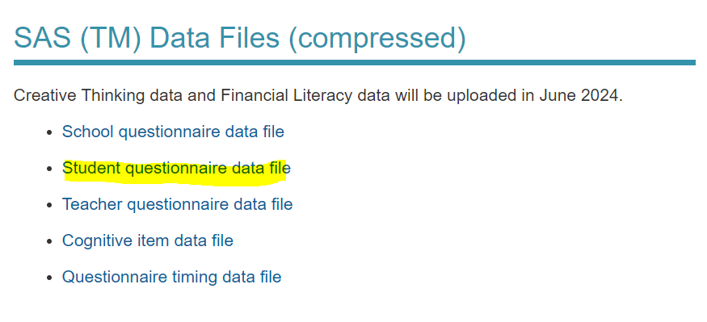

pacman::p_load(haven, knitr, dplyr, kableExtra) Take-Home Exercise 1
1 Overview
Social capital is a crucial element in the educational landscape, intertwining with the functioning and success of schools. Defined as the networks, relationships, and social bonds that individuals and communities build, social capital plays a pivotal role in shaping the educational experiences of students. In the context of schools, it manifests through the connections between students, teachers, parents, and the wider community.
2 Getting Started
2.1 Objectives
The 2022 Programme for International Student Assessment (PISA) data was released on December 5, 2022. PISA global education survey every three years to assess the education systems worldwide through testing 15 year old students in the subjects of mathematics, reading, and science.
In this take-home exercise, I will demonstrate appropriate Exploratory Data Analysis (EDA) methods and ggplot2 functions to reveal:
the distribution of Singapore students' performance in mathematics, reading, and science, and
the relationship between these performances with schools, gender and socioeconomic status of the students.
A total of not more than 5 EDA will be created
2.2 The study area
This will be in the context of Singapore.
2.3 Setting the Analytical Tools
I will use the following package:
- haven: Import and Export ‘SPSS’, ‘Stata’ and ‘SAS’ Files
3 Data Preparation
I will import the data from here
Step by Step as shown below:
- Go to https://www.oecd.org/pisa/data/2022database/
- Scroll down and download the Student questionnaire data file only

data <- read_sas("data/cy08msp_stu_qqq.sas7bdat")
View(data)Summary Statistics
head(data,5) %>%
kbl() %>%
kable_material()| function (..., list = character(), package = NULL, lib.loc = NULL, |
| verbose = getOption("verbose"), envir = .GlobalEnv, overwrite = TRUE) |
| { |
| fileExt <- function(x) { |
| db <- grepl("\\.[^.]+\\.(gz|bz2|xz)$", x) |
str(data)function (..., list = character(), package = NULL, lib.loc = NULL, verbose = getOption("verbose"),
envir = .GlobalEnv, overwrite = TRUE) data[duplicated(dataset),]
sum(is.na(data))